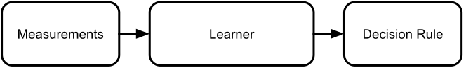
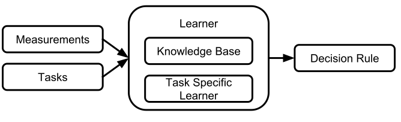
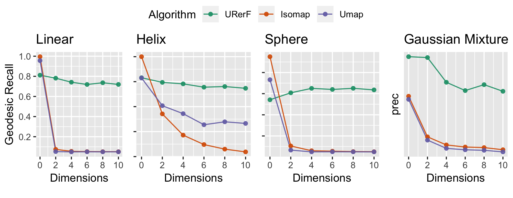
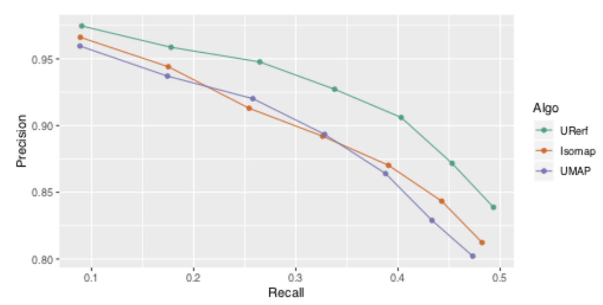
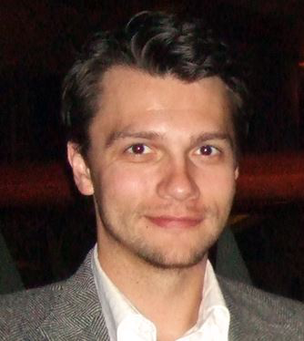

name:opening **Lifelong Learning Forests (JHU)**<br> [Joshua T. Vogelstein](https://neurodata.io) | Carey E. Priebe | Raman Arora <br> Cencheng Shen | Kent Kiehl | Bruce Rosen <!-- {[BME](https://www.bme.jhu.edu/),[ICM](https://icm.jhu.edu/),[CIS](http://cis.jhu.edu/),[KNDI](http://kavlijhu.org/)}@[JHU](https://www.jhu.edu/) --> <a href="https://neurodata.io"><img src="images/neurodata_purple.png" style="height:430px;"/></a> <!-- <img src="images/funding/jhu_bme_blue.png" STYLE="HEIGHT:95px;"/> --> <!-- <img src="images/funding/KNDI.png" STYLE="HEIGHT:95px;"/> --> <!-- <font color="grey"></font> --> .foot[[jovo@jhu.edu](mailto:jovo@jhu.edu) | <http://neurodata.io/talks> | [@neuro_data](https://twitter.com/neuro_data)] --- class: center, middle <video width="320" height="650" controls> <source src="images/lion_walking.mp4" type="video/mp4"> </video> --- ### Last Time <br><br><br><br> ``` "Demonstrate that Randomer Forests can do Lifelong Learning" ``` -- Hava, DARPA PM --- ## Outline - What is lifelong learning? - Can Randomer Forests do it (even conceptually)? - Does it work on real data? --- class: middle ## .center[.k[What is Lifelong Learning?]] --- ### Lifelong Learning Machines From *Lifelong Machine Learning* (2016): - The learner has performed a sequence of J learning tasks. - The tasks can be of different types and from different domains. - When faced with the (J + 1)th task with its data, the learner can leverage the past knowledge in the knowledge base (KB) to help learn. - The objective of an L2M is to optimize the performance on all the tasks. - KB maintains the existing knowledge and updates with new knowledge from the (J+1)th task. -- What is a .r[task], .r[learner], .r[knowledge base]? --- ### What is a Task? A task is a sextuple $\mathcal{T} = \lbrace \mathcal{Z}, \mathcal{A}, P, \Phi, \ell, \mathbb{R} \rbrace$ | Object | Space | Definition | |:--- |:--- | | $z$ | $ \mathcal{Z}$ | measurements | $a$ | $\mathcal{A}$ | actions | $P: \Omega \to \mathcal{Z}$ | $ \mathcal{P}$ | density | $\phi: \mathcal{Z} \to \mathcal{A}$ | $\Phi$ | decision rule | $\ell: \Phi \times \mathcal{A} \to \mathbb{R}_+$ | $\mathcal{L}$ | loss | $\mathbb{R}: \mathcal{L} \times \mathcal{P} \times \Phi \to \mathbb{R}_+$ | $\mathcal{R}$ | risk <!-- - Bayes Optimal (Oracle) decision rule for $\mathcal{T}$: --> <!-- $$\phi\_* = \arg \min \, \mathbb{R}\_{\ell}(P,\phi) \quad s.t. \, \phi \in \Phi$$ --> <!-- - Goal: choose $\phi_*$ --> <!-- \arg \min_{\phi \in \Phi} \mathbb{R}_\ell(P,\phi).$$ --> --- ### Example tasks - Parameter estimation (estimate mean) - Hypothesis testing (mean $\neq$ 0) - Dimensionality reduction (isomap) - Classification / regression (linear regression) - Forecasting (kalman filter) - Control (reinforcement learning) - Density estimation (kernel density estimate) - Clustering (k-means) --- ### What is Learning? | Object | Definition | |:--- |:--- | | learners | $f_t : \mathcal{Z}^t \to \Phi$ | loss | $ \ell(\hat{\phi}\_{T}(z\_t),a\_t)$ | oracle loss | $ \inf\_{\phi \in \Phi} \ell({\phi}(z\_t),a\_t) = \ell({\phi}\_*(z\_t),a\_t)$ | excess loss | $\hat{\epsilon}\_T(f) = \ell(\hat{\phi}\_{T}(z\_t),a\_t) - \ell(\phi\_*(z\_t),a\_t) $ | regret | $\hat{R}\_T(f) = \frac{1}{T}\sum\_{t=1}^T \hat{\epsilon}\_T(f)$ A learner is said to .r[learn] whenever $\mathbb{E} [\hat{\epsilon}\_T(f)] \to 0$ as $T \to \infty$. Alternatively, whenever $\mathbb{E} [\hat{R}\_T(f)] \to 0$ as $T \to \infty$. <!-- Goal: choose $f = f_1, f_2, \ldots $ such that for any $\epsilon, \delta > 0$ and some $P \in \mathcal{P}$: --> <!-- $$ \mathbb{P} [ \hat{R}\_T(f) \leq \epsilon] > 1 - \delta $$ --> <!-- $\varepsilon_n \rightarrow 0$ --> <!-- | $f_n: \mathcal{Z}^n \times \mathcal{L} \to \mathcal{G}$ | $\mathcal{F}$ | .r[learner] --> --- ### What is Lifelong Learning? Given - $J$ tasks: $\mathcal{T}_j, j = 1,\ldots, J$, - and $T_j$ measurements from each task $\mathcal{D}_j = (z_t,j_t) \, \forall j_t = j$ - where each task can differ by any of $\lbrace \mathcal{Z}\_j, \mathcal{A}\_j, P\_j, \Phi\_j, \ell\_j, \mathbb{R}\_j \rbrace$ - and $T = \sum_j T\_j$. --- ### What is Lifelong Learning? | Regret | Definition | |:--- |:--- | | Task | $\hat{R}\_{T\_j}^j(f) = \sum\_{t: j\_t = j} \ell\_j(\hat{\phi}\_{T\_j}(z\_t),a\_t) - \ell\_j(\phi\_*(z\_t),a\_t) $ | Lifelong | $\hat{R}\_T^j(f) = \sum\_{t: j\_t = j} \ell\_j(\hat{\phi}\_{T}(z\_t),a\_t) - \ell\_j(\phi\_*(z\_t),a\_t) $ | Relative | $\hat{S}^j\_T(f) = \hat{R}\_T^j(f) / \hat{R}\_{T\_j}^j(f)$ | Cumulative Relative | $\hat{S}\_T(f) = \frac{1}{J} \sum\_{j=1}^J \hat{S}^j\_T(f)$ <br> A .r[lifelong learner] is said to lifelong learn whenever <br> $\mathbb{E}[\hat{S}\_T(f)] \to c < 1$ as $J,T \to \infty$. -- On average, data from other tasks much improve performance relative to not having seen those data. --- ### What is .r[Not] Lifelong Learning? - Online learning: only 1 task, don't care about forgetting - Transfer learning: don't care about reverse transfer, J is fixed - Multi-Task Learning: J is fixed (no such thing as forgetting) <br><br> The key differentiator between **lifelong** and **dead** learning is forgetting. --- ### Variants of Lifelong Learning - Supervised: the L2M .r[always] knows $j_t$ - **Un**supervised: the L2M .r[never] knows $j_t$ - **Semi**supervised: the L2M .r[sometimes] knows $j_t$ - **Mix**supervised: the L2M .r[may sometimes] know $j_t$ --- ### How is this definition different? Existing literature defines a **particular** L2M, and either: 1. empirically shows performance improves as T/J increases, 2. theoretically proves that performance improves as T/J increases. We formally defined what it means for **any** L2M to be able to claim that it lifelong learns. <!-- -- The key for lifelong learning is to ascertain for each task how different it is from the other tasks, and selective leverage knowledge from those tasks to improve performance over what would be possible without having access to data from those tasks --> --- ### Summary of Part 1 We propose the first, to our knowledge, general definition of what are the necessary and sufficient conditions for a learning machine to be a lifelong learner: It must improve average performance across tasks as both number of tasks and samples increase, faster than a learner that operates on each task individually. --- class: center, middle, inverse (pause) --- class: middle ## .center[.k[Can Randomer Forests do it?]] --- ### Approach 1. What are the necessary and sufficient components of any L2M? 2. What are Randomer Forests? 3. Do they have the "right stuff"? --- ### What are L2M Components? Learning Machines: <br>  --- ### What are L2M Components? Lifelong Learning Machines: <br>  - **KB** stores knowledge shared across tasks - **Task-Specific Learner** generates task specific decision rules using KB --- ### What are Random Forests (RF)? Given $T$ samples, a **random** forest is constructed as follows: 1. Randomly sample $T' < T$ to build a tree 2. Initialize the root node with all $T'$ samples, label it an internal node 3. For each internal node, 1. subsample $d$ features 2. find the best of those $d$ features to split on 3. split on it 4. For each daughter node, determine whether it is a terminal node 5. If not, return to step 3 6. Repeat for $N$ trees --- ### What are Random.r[er] Forests (RerF)? Given $T$ samples, a **random.r[er]** forest is constructed as follows: 1. Randomly sample $T' < T$ to build a tree 2. Initialize the root node with all $T'$ samples, label it an internal node 3. For each internal node, 1. .r[generate $d$ sparse linear combinations of the original features] 2. find the best of those $d$ features to split on 3. split on it 4. For each daughter node, determine whether it is a terminal node 5. If not, return to step 3 6. Repeat for $N$ trees --- ### Why Might RerF > RF? - RF can do *axis-aligned* splits, RerF can do *oblique* splits - Trees can be stronger, tree strength bounds forest accuract - Unlike other oblique methods - RerF not fooled by lots of noisy features - Computational complexity of RerF = RF - Ensemble over parameters rather than a fixed parameter --- ### Do They Work Empirically? <img src="images/rerf_perf1.png" style="width:600px;"/> --- ### Do They Work Theoretically? <br> Thm: Randomer forests are universally consistent, that is, $\hat{R}_t(f) \to 0$ as $t \to \infty$ --- ### Do they work Lifelong? -- yes (in theory). -- (maybe also in practice) --- #### Key Insight Decision forests secretly have two parts: 1. learn tree structure 2. estimates leveraging tree structure - Each can be separately estimated - tree structure encodes KB - estimates leveraging trees encode task-specific learning #### Things I Need to Show You 1. RerF can consistently estimate $P[Y|X]$ 2. RerF can learn KB in tree structure <!-- So far, I only told you how to build trees, not 1. how to estimate stuff using trees 2. those estimates are theoretically consistent 2. how to learn structure 3. those estimates are theoretically consistent --> --- ### How to estimate stuff using trees: For each tree: - Take the $T - T'$ "out of tree" samples - Pass all those samples down the tree - Estimate $P[Y | X]$ for each terminal node in the tree: - fraction of points in node with each value of $y$ This is called **honest sampling**. -- Our insight: regardless of how one constructed a tree, one can still estimate $P[Y|X]$ from that tree on a new dataset/task. -- This yields selective plasticity, not just per tree, but per node. --- ### A simple example Given data from 2 tasks: 1. Build a forest for task 1 2. Build a forest for task 2 1. Using each tree in forest$_1$, estimate $P[Y|X]$ for task 1 3. Using each tree in forest$_2$, estimate $P[Y|X]$ for task 2 1. Using each tree in forest$_1$, estimate $P[Y|X]$ for task 2 1. Using each tree in forest$_2$, estimate $P[Y|X]$ for task 1 -- Given new data $x_t$ from task $j_t$: 1. pass each $x_t$ down all trees 1. obtain task $j_t$ estimates of $y$ from each tree 1. average results across all trees --- ### Estimating $P[Y|X]$ - Mixture of 2 spherically symmetric Gaussians centered at zero - Sample 500 points from joint - Compute $P[Y|X]$ for $ | x | < 4$ <img src="images/posterior_combined.png" style="width:700px;"/> - CART is not consistent - Honesty is theoretically consistent, but not good - Conditional Entropy Forests (CEF) is both --- ### CEF empirically outperforms <img src="images/posterior_var_x_500.png" style="width:700px;"/> --- ### CEF empirically outperforms <img src="images/alg_comparison_final_noerror_20.png" style="width:700px;"/> --- ### CEF is theoretically consistent Thm: Conditional entropy forest's estimate of $P[Y | X]$ is universally consistent, meaning $\hat{P}_t[Y|X] \to P[Y|X]$ as $t \to \infty$. -- ### Summary so far CEF both empirically and theoretically estimates the requisite quantifies with few-shot data What about the KB? --- ### Building a knowledge base - KB stores "latent low dimensional structure" of all data - Latent structure is encoded in the **geodesic** distance - KB should be able to learn which points are "**close**"" to one another along the geodesic in the face of noise - Kernel matrices quantify how close are all pairs of points --- ### Decision Forest Kernels (DFK) How to estimate a kernel from decision forests Given $T$ measurements: 1. construct $N$ trees (somehow) 2. pass each data point down each tree 3. count the fraction of trees for which any pair of points lands in the same leaf node This yields a $T \times T$ kernel matrix. --- ### Decision Forests Induce Characteristic Kernels Thm: The above procedure (with a trivial modification) yields a characteristic kernel Implication: any theorem about kernel machines and kernel learning (eg, consistency of SVM, MMD-GAN, etc.) can now immediately be applied to DFK's. --- ### DFK Improves Kernel Testing - 16 different high-dimensional independence testing scenarios - Each sample 100 points - Y-axis is normalized power, higher is better - X-axis is number of dimensions (additional dimensions are noise) <img src="images/FigHDPowerAll_S-RF.png" style="width:600px;"/> --- ### KB Learning - Consider these 4 scenarios <img src="images/geodesic_data.png" style="width:700px;"/> - We desire the KB learns which points are close to one another **on the latent manifolds**, even as noise is added. - Manifold learning algorithms do this (in theory). --- ### URerF Learns Geodesic - Geodesic Recall@k: the fraction of points that the learner says as the k closest that are actually the k closest **on the latent manifolds** - URerF: unsupervised RerF  - As noise dimensions are added, existing manifold learning algorithms quickly approach chance levels. --- ### Putting it All Together - Task 1 and Task 2 differ by sign flip - Both are 10 dimensional two-class classification problems - Each class is a spherically symmetric Gaussian - Sample 100 points from each <img src="images/trunks.png" style="width:700px;"/> --- ### Putting it All Together <img src="images/trunks_wrf.png" style="width:400px;"/> --- ### Summary of Part 2 - Lifelong learners must - Construct a KB - Estimate task specific distributions - Decision forests do both - We proposed novel and improved ways to: - Construct a KB via trees - Estimate task specific distributions on trees - We demonstrated on a toy example that putting these pieces together yielded an improved relative cumulative regret --- class: center, middle, inverse (pause) --- class: middle ## .center[.k[Does it work on real data?]] --- ### Preliminary progress 1. Geodesic learning on Drosophila brains 2. Classification of Images 3. Classification of 2D CIFAR-10 Images 3. Classification of 3D brain images --- ### Drosophila Brain Networks <img src="images/Fig15-new.png" style="width:800px;"/> We are training Drosophila differently to modify this network --- ### Geodesic Learning Drosophila Brain  --- ### Classification of Images - Fundamentally, L2M involves low-shot learning - Deep learing is data hungry - Convolutional RF is not - Compare Conv-RF with - Simple CNN - SOA CNN on this particular dataset - MNIST data was too easy, everything got nearly perfect quickly - CIFAR-10 was much harder: - we subsampled the data up to 35% of the samples --- ### Classification of 2D CIFAR-10 Images <img src="images/rf_deepconvrf_cnn_comparisons.png" style="width:600px;"/> --- ### Classification of 2D CIFAR-10 Images <img src="images/rf_deepconvrf_cnn_comparisons2.png" style="width:600px;"/> --- ### Classification of 3D Brain Images - Existing brain imaging datasets typically were all collected in a single batch - We have 2 different kinds --- #### Human Connectome Lifespan Data - Hundreds of children ages 5-21 - Certain properties of them are static over time: race, sex, heritage, genotype, IQ - Brains change over time - We want to learn a decision rule, say, on sex using younger kids, and then continue learning on older kids to improve performance on both - Data are done being collected, are now being processed --- ### Psychopathy Data - Collected data over 10 years on mobile MRI scanner - In that 10 year period, **lots** of stuff changed: - hardware, software, operator, location - We desire to learn a rule using the first 5 years, and then show that it can keep learning on the subsequent 5 years - These data are awesome: - nearly 900 subjects - multi-modal imaged over 10 years (structural and diffusion) - murderer, non-murderer violent criminal, non-violent criminal - got IRB approval to even transfer data 3 weeks ago! --- ### Preliminary Exploratory Analysis <img src="images/homicide_scatter.png" style="width:550px;"/> --- ### Summary of Part 3 - RerF learns geodesic on 1 task better than alternatives - On "standard" 2D images, Conv-RF beats CNNs - Real data now exist and are at least partially processed --- class: center, middle, inverse (pause) --- ## Next Steps - Finalize formalization of what consistitues L2M - Theoretically and empirically put all the pieces together - Analyze real data --- ### References (Learning Trees) 1. C. Shen and J. T. Vogelstein. Decision Forests Induce Characteristic Kernels. arXiv, 2018 3. T. M. Tomita et al. Random Projection Forests. arXiv, 2018. 7. J. Browne et al. Forest Packing: Fast, Parallel Decision Forests. SIAM International Conference on Data Mining, 2018. --- ### References (Estimate Probabilities) 6. C. Shen et al. Discovering and Deciphering Relationships Across Disparate Data Modalities. eLife, 2019. 5. C. Shen, C. E. Priebe and J. T. Vogelstein. From Distance Correlation to Multiscale Graph Correlation. Journal of the American Statistical Association, 2018. 8. Y. Lee, C. Shen and J. T. Vogelstein. Network Dependence Testing via Diffusion Maps and Distance-Based Correlations. Biometrika, 2018. 2. C. Shen and J. T. Vogelstein. The Exact Equivalence of Distance and Kernel Methods for Hypothesis Testing. arXiv, 2018. 1. M. Madhya, et al. Geodesic Learning via Unsupervised Decision Forests. submitted, 2019. --- ### References (Vertex Nomination) 9. Vince Lyzinski, Keith Levin, Carey E. Priebe, On consistent vertex nomination schemes. Journal of Machine Learning Research, 2019 14. Jordan Yoder, et al. Vertex nomination: The canonical sampling and the extended spectral nomination schemes. submitted, 2018. --- ### Acknowledgements <!-- <div class="small-container"> <img src="faces/ebridge.jpg"/> <div class="centered">Eric Bridgeford</div> </div> <div class="small-container"> <img src="faces/pedigo.jpg"/> <div class="centered">Ben Pedigo</div> </div> <div class="small-container"> <img src="faces/jaewon.jpg"/> <div class="centered">Jaewon Chung</div> </div> --> <div class="small-container"> <img src="faces/cep.png"/> <div class="centered">Carey Priebe</div> </div> <div class="small-container"> <img src="faces/randal.jpg"/> <div class="centered">Randal Burns</div> </div> <div class="small-container"> <img src="faces/cshen.jpg"/> <div class="centered">Cencheng Shen</div> </div> <div class="small-container"> <img src="faces/bruce_rosen.jpg"/> <div class="centered">Bruce Rosen</div> </div> <div class="small-container"> <img src="faces/kent.jpg"/> <div class="centered">Kent Kiehl</div> </div> <!-- <div class="small-container"> <img src="faces/mim.jpg"/> <div class="centered">Michael Miller</div> </div> <div class="small-container"> <img src="faces/dtward.jpg"/> <div class="centered">Daniel Tward</div> </div> --> <!-- <div class="small-container"> <img src="faces/vikram.jpg"/> <div class="centered">Vikram Chandrashekhar</div> </div> <div class="small-container"> <img src="faces/drishti.jpg"/> <div class="centered">Drishti Mannan</div> </div> --> <div class="small-container"> <img src="faces/jesse.jpg"/> <div class="centered">Jesse Patsolic</div> </div> <div class="small-container"> <img src="faces/falk_ben.jpg"/> <div class="centered">Benjamin Falk</div> </div> <!-- <div class="small-container"> <img src="faces/kwame.jpg"/> <div class="centered">Kwame Kutten</div> </div> --> <!-- <div class="small-container"> <img src="faces/perlman.jpg"/> <div class="centered">Eric Perlman</div> </div> --> <div class="small-container"> <img src="faces/loftus.jpg"/> <div class="centered">Alex Loftus</div> </div> <!-- <div class="small-container"> <img src="faces/bcaffo.jpg"/> <div class="centered">Brian Caffo</div> </div> --> <!-- <div class="small-container"> <img src="faces/minh.jpg"/> <div class="centered">Minh Tang</div> </div> --> <!-- <div class="small-container"> <img src="faces/avanti.jpg"/> <div class="centered">Avanti Athreya</div> </div> --> <!-- <div class="small-container"> <img src="faces/vince.jpg"/> <div class="centered">Vince Lyzinski</div> </div> --> <!-- <div class="small-container"> <img src="faces/dpmcsuss.jpg"/> <div class="centered">Daniel Sussman</div> </div> --> <div class="small-container"> <img src="faces/youngser.jpg"/> <div class="centered">Youngser Park</div> </div> <!-- <div class="small-container"> <img src="faces/shangsi.jpg"/> <div class="centered">Shangsi Wang</div> </div> --> <div class="small-container"> <img src="faces/tyler.jpg"/> <div class="centered">Tyler Tomita</div> </div> <div class="small-container"> <img src="faces/james.jpg"/> <div class="centered">James Brown</div> </div> <div class="small-container"> <img src="faces/disa.jpg"/> <div class="centered">Disa Mhembere</div> </div> <!-- <div class="small-container"> <img src="faces/gkiar.jpg"/> <div class="centered">Greg Kiar</div> </div> --> <div class="small-container"> <img src="faces/jeremias.png"/> <div class="centered">Jeremias Sulam</div> </div> <div class="small-container"> <img src="faces/meghana.png"/> <div class="centered">Meghana Madhya</div> </div> <div class="small-container"> <img src="faces/percy.png"/> <div class="centered">Percy Li</div> </div> <div class="small-container"> <img src="faces/hayden.png"/> <div class="centered">Hayden Helm</div> </div> <div class="small-container"> <div class="centered">Satish Palaniappan</div> </div> <div class="small-container">  <div class="centered">Nate Anderson</div> </div> <div class="small-container"> <div class="centered">Qiuyun Fan</div> </div> </div><span style="font-size:200%; color:red;">♥, 🦁, 👪, 🌎, 🌌</span> <!-- <img src="images/funding/nsf_fpo.png" STYLE="HEIGHT:95px;"/> --> <!-- <img src="images/funding/nih_fpo.png" STYLE="HEIGHT:95px;"/> --> <img src="images/funding/darpa_fpo.png" STYLE=" HEIGHT:95px;"/> <!-- <img src="images/funding/iarpa_fpo.jpg" STYLE="HEIGHT:95px;"/> --> <!-- <img src="images/funding/KAVLI.jpg" STYLE="HEIGHT:95px;"/> --> <!-- <img src="images/funding/schmidt.jpg" STYLE="HEIGHT:95px;"/> --> --- class:center <img src="images/lion_cartoon2.jpg" style="position:absolute; top:0px; left:0px; height:100%;"/>